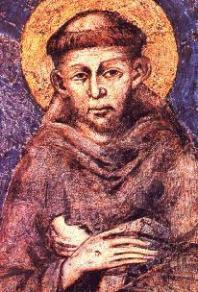
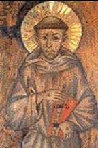
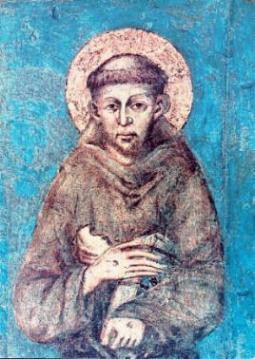
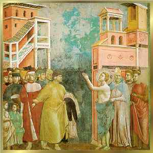
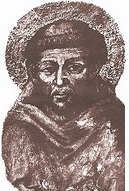
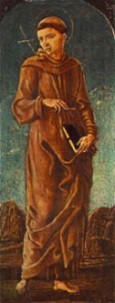

CARINHO POR TODAS IGREJAS
Desde jovem, tinha um carinho
especial por todas Igrejas, fosse ela uma 
“DEUS me deu uma fé tão grande nas Igrejas, que sempre quando as visitava, rezava assim: Eu te adoro e te bendigo SENHOR JESUS CRISTO, aqui e em todas Igrejas que existem, porque com a tua Cruz remistes o mundo.â€
Haviam muitas Capelinhas espalhadas em todas as partes, algumas totalmente esquecidas e abandonadas, fechadas e sem vida. São Damião era uma delas, uma Capelinha rústica que tinha como único ornamento um Crucifixo bizantino sobre o altar. Diante dele, Francisco costumava rezar:
“Grande DEUS, cheio de glória e poder, ouvi-me. VÓS, SENHOR JESUS CRISTO, rogo-VOS me ilumineis e dissipeis as trevas de meu espírito e me deis uma fé pura, uma firme esperança e uma caridade perfeita! Fazei meu DEUS, que eu VOS conheça bem e que faça todas as coisas seguindo a VOSSA Luz e conforme a VOSSA Santa Vontade.â€
Um dia, DEUS decidiu que Francisco era digno de ouvi-LO. Do Crucifixo saiu uma voz:
“Vai Francisco, restaura a minha casa, como vês, ameaça em ruína!â€
De índole impulsiva e ardente, logo se prontificou em executar a ordem Divina. Com alma simples e obediente, entendeu a mensagem de DEUS literalmente, ou seja, “ao pé da letraâ€, projetando reconstruir materialmente todas as Igrejas que encontrasse.
Assim que saiu da Capela, viu do lado de fora o Padre, um senhor idoso que estava sentado numa pedra se aquecendo sob a luz do sol da manhã. Aproximou-se respeitosamente, como era o seu hábito, cumprimentou-o beijando-lhe a mão e lhe entregou uma bolsa com moedas, dizendo:
“Rogo-lhe comprar uma lâmpada de óleo e deixá-la diariamente ardendo ao lado do Crucifixo no altar. Quando esta quantia terminar, por favor avise-me.â€
Antes que o Padre dissesse alguma coisa, montou o cavalo e partiu ligeiro. Com o coração saltitante, porque já fazia planos de como colocar em prática a Ordem Divina, pensava: "começarei reformando esta Igrejinha de São Damião".
Retornando a casa, com a maior agilidade apanhou na Loja muitas peças de tecidos, acomodou-as num animal de carga e foi para a cidade próxima de Foligno.
Em pouco tempo transformou tudo aquilo em dinheiro, as peças de tecidos e até o animal. Vendeu tudo. Com a bolsa cheia, voltou a São Damião.

O velho Padre cheio de suspeitas, energicamente recusou a oferta, imaginou que fosse mais uma extravagância "de um maluquinho que queria descobrir novas aventuras" , conforme a fama que ele mesmo tinha conseguido anteriormente, com seu comportamento de jovem gozador. Assim, apesar de toda argumentação de Francisco, o Sacerdote ainda esclareceu, que não estava disposto a se expor às censuras de Pedro, pai do rapaz, quando sentisse falta e viesse apurar o destino dos tecidos, do animal e de seu dinheiro. Desse modo, o único favor que Francisco obteve do Padre foi ficar algum tempo em São Damião, para se dedicar a Oração. Perto da casa do Sacerdote havia uma pequena gruta, a qual escolheu para o seu retiro espiritual, porque não queria incomodar ninguém. Ali passava dias e noites em orações e jejum.
DRAMÁTICO AJUSTE FAMILIAR DE CONTAS
Nesse meio tempo, o pai de Francisco retornou de sua 
Num dia de Abril de 1207, Pedro estava em seu estabelecimento comercial quando ouviu uma gritaria que vinha da rua. Chegando a porta para ver o que acontecia, vislumbrou seu filho, mal vestido, cercado pelos meninos de rua que zombavam e faziam chacotas com ele. Enfurecido, lançou-se no meio dos canalhas e distribuiu socos e pontapés à vontade, com tanta raiva e violência, que os moleques apavorados recuaram. Sem falar uma palavra, agarrou o filho, arrastou-o para casa e jogou-o num vão escuro embaixo da escada de acesso a parte superior do prédio, trancando a porta.
Passados alguns dias, Pedro teve que viajar novamente. A mãe, sem perda de tempo libertou o filho, levou-o para o quarto e deu-lhe alimento. Conversando com ele, implorou que mudasse de vida, voltasse para casa e para o trabalho na loja. Em vão. Ele se manteve irredutível em sua decisão. Depois de se despedir da mãe, voltou para o retiro em São Damião e por iniciativa própria, procurou as autoridades eclesiásticas, a fim de receber as ordens menores, entrando para a vida religiosa.
Quando o pai regressou, achou o cárcere do filho vazio. Mas desta vez, ao invés de ir procurá-lo em São Damião, recorreu aos magistrados. Pediu oficialmente aos Cônsules que fizessem um processo para deserdar o filho. Os Cônsules de Assis que gozavam da amizade de Pedro de Bernardone, prepararam a documentação e intimaram Francisco a comparecer ao Tribunal. Com esta finalidade, um oficial da justiça foi entregar pessoalmente a intimação ao rapaz. Mas ele disse ao emissário:
“Pela graça de DEUS, sou agora um homem livre e não estou obrigado a comparecer perante os Cônsules, visto não ter outro senhor senão DEUS.â€
Assim, os Cônsules não puderam julgar o filho de Bernardone. Mas Pedro não se conformou, não queria abandonar a idéia fixa de recuperar os bens que ficaram com o filho. Foi procurar o Senhor Bispo. O prelado aceitou as suas ponderações. Mandou avisar Francisco e marcou o dia e hora em que pai e filho se encontrariam publicamente, na presença dele. Na data prevista, uma multidão de pessoas superlotava as dependências da sede episcopal, para presenciarem o desenrolar das cenas. O Bispo olhando para Francisco, disse: “Se sua intenção é verdadeiramente se consagrar ao serviço de DEUS, deve restituir a seu pai todo o dinheiro dele, que talvez foi mal adquirido e que por conseguinte, não poderá ser empregado em favor da Igreja.â€

Fez-se um silêncio de expectativa e aconteceu um fato inusitado... Perfeitamente calmo, olhando para o bispo o jovem falou:
“Senhor, com muito gosto restituirei ao meu pai as coisas que lhe pertencem.â€
Caminhou para um aposento próximo e voltou em seguida completamente nu, trazendo nos braços suas roupas e as sandálias, depositando-as nos pés de seu pai e colocando por cima, o pouco dinheiro que lhe restava, e com voz firme falou:
“Ouçam e entendam! Até o presente chamei a Pedro de Bernardone de meu pai. Agora lhe restituo as vestes e o dinheiro que ainda possuía. De modo, que de hoje em diante não mais chamarei Pedro de Bernardone de meu pai, porque o nosso único PAI está nos Céus.â€
Pedro permanecia impassível! Com o semblante frio, abaixou, pegou as vestes e o dinheiro, cheio de cólera saiu sem dizer nenhuma palavra. O Bispo de imediato abriu a capa e envolveu Francisco cobrindo sua nudez e levou-o para o interior da residência episcopal. A partir daquele momento o “Poverello†(Pobrezinho) de Assis tornara-se inteiramente um servo de DEUS.
O Bispo Guido arranjou-lhe uma roupa usada e uma capa preta, que tinham sido abandonadas pelo jardineiro. Vestindo aquelas roupas, saiu pelo mundo, afastou-se da terra de sua juventude, dos parentes, dos companheiros e de todo o seu passado.
COMPREENDENDO SUA MISSÃO
Todavia,
retornou a Assis, depois de pouco mais de um ano de ausência, porque 
Os risos zombeteiros e as galhofas que faziam com ele, cessaram desde aquela famosa cena ocorrida no Palácio Episcopal. Agora, ao invés de sorrisos, as pessoas escutavam-no com atenção, respeito e admiração.
Assim que chegou trabalhou firme, conseguiu auxílio com as famílias, no comércio e com as autoridades civis e religiosas, até concluir o trabalho. E para coroar com pleno êxito a restauração, providenciou recursos para deixar uma considerável provisão de óleo, objetivando manter acesas todas as lâmpadas da Igrejinha, especialmente aquela, ao lado do Crucifixo bizantino.
Ainda cumprindo literalmente a Ordem Divina, restaurou a antiga Igreja beneditina de São Pedro e logo depois, reformou também a Igrejinha da Porciúncula, chamada de Igreja de Santa Maria dos Anjos, próxima de onde fixou sua residência.
No princípio do século XIII, não era hábito o sacerdote celebrar Missas todos os dias. As Santas Missas eram celebradas somente aos domingos, nas Festas Litúrgicas especiais, ou quando eram encomendadas.
Entretanto, desde essa época, Francisco se empenhava a fim de poder participar de Missas em um maior número possível de dias. Como resultado imediato de sua obra em São Damião, foi a amizade que estabeleceu com aquele Padre idoso. Assim, depois que se fixou na Porciúncula, aquele Padre para agradá-lo, ia bem cedo celebrar a Santa Missa na Igrejinha de Santa Maria dos Anjos, ao lado de sua cabana. Por este tempo, ele já estava percebendo o significado correto da Ordem Divina que recebeu em São Damião: “Compreendeu que a ordem Divina de reconstruir a minha casa, o SENHOR não o estava mandando reformar todas as Igrejas e Capelas que encontrasse, mas que ele se preocupasse em reconstruir o coração da humanidade e despertá-lo para o CRIADOR, através do ensinamento e do bom exemploâ€.

“Proclamai que o Reino dos Céus está próximo. Curai os doentes, ressuscitai os mortos, purificai os leprosos, expulsai os demônios. De graça recebestes, de graça dai. Não leveis ouro, nem prata, nem cobre nos vossos cintos, nem alforje para o caminho, nem duas túnicas, nem sandálias, nem cajado: pois o operário é digno do seu sustento. Quando entrardes numa cidade ou numa aldeia procurai saber de alguém que seja digno e permanecei ali até vos retirardes do lugar. Ao entrardes na casa, saudai-a. E, se for digna, desça a vossa paz sobre ela. Se não for digna, volta a vós a vossa paz.â€(Mt 10,7-14)
Estes versículos ficaram gravados em sua mente como uma verdadeira e explícita revelação Divina e por isso, escreveu em seu Testamento:
“O próprio Altíssimo dignou-se de me revelar que eu devia viver conforme o Santo Evangelho†e também, revelou-me o modo de saudação que devia usar: "o SENHOR LHE dê a Paz!â€
Ciente da Vontade Divina, preparou-se interiormente para começar a cumprir a nova inspiração que recebeu. Quando caminhava e via um grupo de pessoas, pequeno que fosse, aproximava-se e fazia uma pregação direta e objetiva. Falava com simplicidade e sem afetação, convidando as pessoas para o exercício da paz e da fraternidade, porque são virtudes que atuam nas criaturas, além de serem o fundamento para uma sólida e permanente compreensão da Suprema Vontade do CRIADOR.